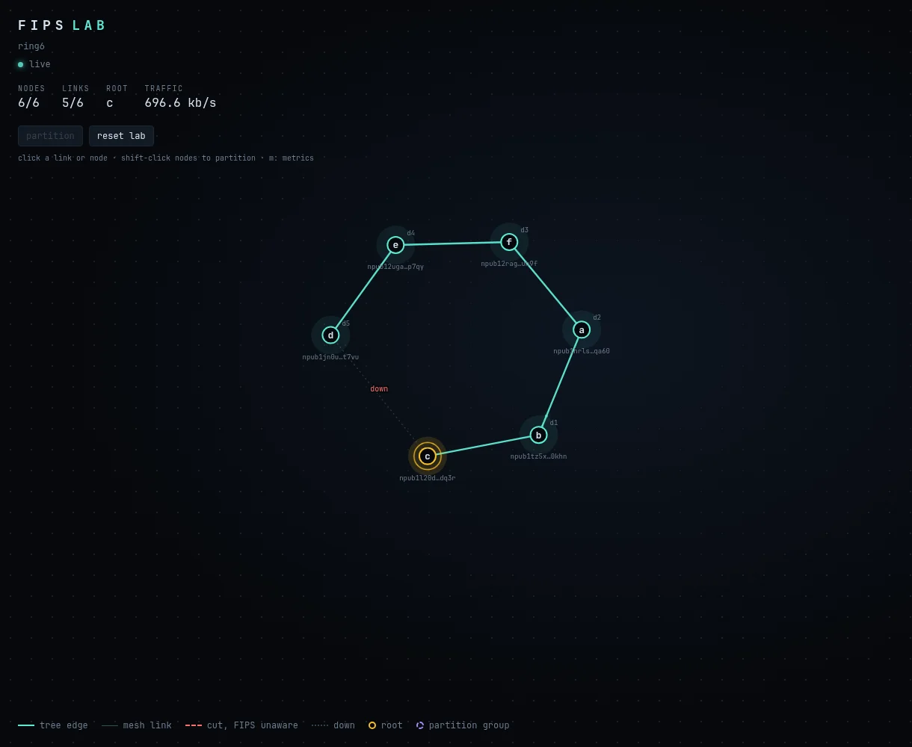

Case study · October 2026
FIPS Lab: breaking a mesh network on purpose
FIPS is a young mesh network whose nodes are identified by Nostr keys and route traffic among themselves, with no central server. It promises to heal itself when links fail. I built a lab to check how well it keeps that promise.

The question
When a link in a FIPS mesh breaks, how long until traffic flows the other way round, and does it always? That is easy to ask and hard to answer by hand. You need a mesh you can break in exactly the same way a hundred times, measurements that keep the runs where nothing came back, and a way to see what the network thinks is happening while it happens.
What I built
- A reproducible testbed. A topology file becomes a mesh of FIPS nodes in Docker. Each link is its own network, so a cut, a delay or packet loss hits exactly one link.
- Fault injection, scripted or by hand. Cut, heal, kill, partition and degrade, from the command line, from scenario files, or by clicking a link in the browser.
- A live view. A collector reads every node's control socket once a second and streams it to a D3 page, so you watch the tree re-form after a cut.
- Measurements that keep the failures. A wait that times out is stored as a censored measurement, not dropped. That choice is what made the main finding visible.
What I found
Most of the time the answer is dull, in a good way: traffic reroutes within the dead-link timeout plus about a second. Two things were not dull.
- A five-minute window where traffic can get stuck. In 7 of 10 cuts made 90 s after start-up, replies looped between two nodes until their hop limit ran out, and nothing got through for minutes. On a mesh that had been running a while: 0 of 38. I traced it in the Rust source to an anti-poisoning rule: a node trusts its own verified routing data for 300 s and refuses corrections in the meantime.
- A repaired link that sits idle. After a link is declared dead, reconnect attempts back off exponentially, so a healed link can wait up to 76 s before it is used again.
Seeing the timer from outside
Reading the source gave the answer, but would the measurements alone have found it? A censored mixture model in PyMC, fit to every cut, places the hidden window at 301.4 ± 1.3 s. The second write-up shows what each kind of evidence adds, then uses the model to predict cuts it had not seen. A fresh 25-minute run put 5 of 5 inside the predicted range.
Write-ups
Write-up 01
Thirty seconds of silence
How fast the mesh routes around a cut, and the forwarding loop found on the way. Interactive charts and a diagram of the loop.
Write-up 02
A timer through the wall
Inferring the hidden timer with a Bayesian model, then testing its prediction against new runs.